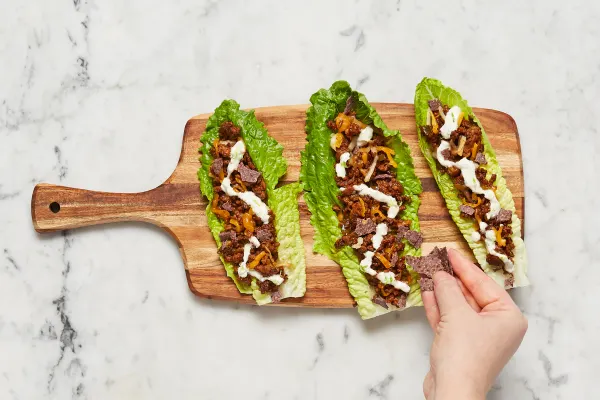

One-Pan Pork Fajita Lettuce Wraps
with Blue Corn Tortilla Chips & Lime Crema

Description
Lettuce wraps take the place of tortillas in tonight’s one-pan fajita dish. You’ll cook ground pork with our Fajita Spice, onion and bell pepper on the stove, then sprinkle and melt cheese on top. Off the heat, you’ll make a lime crema, which adds a light and cooling drizzle on top. Pile that all in your lettuce and wrap it up with a sprinkle of tortilla chips for an added level of crunch. Now all you have to do is perfect your lettuce folding technique to maximize each full bite!
Recipe Credit
Ingredients
- 1 Yellow Onion
- 1 Lime
- 1.5 ounces of Blue Corn Tortilla Chips
- 1 tablespoon of Fajita Spice Blend
- 4 tablespoons of Sour Cream
- 1 Long Green Pepper
- 1 head of Baby Romain Lettuce
- 10 ounces of Ground Pork
- Beef Stock Concentrate
- 1/2 cup of Mexican Cheese Blend
- 1 teaspoon of Cooking Oil
- Kosher Salt
- 1/2 teaspoon of Sugar
- Black Pepper
Steps
- • Wash and dry produce. • Halve, peel, and finely dice onion. Core, deseed, and finely dice green pepper. Zest and quarter lime. Trim and discard root end from lettuce; separate leaves. Gently crush tortilla chips in their bag into small pieces.
- • Heat a drizzle of oil in a large pan over medium-high heat. Add onion, green pepper, and pork. Season generously with salt (we used ¼ tsp) and pepper. Cook, breaking up meat into pieces, until pork is lightly browned and onion is slightly softened, 4-5 minutes. • Add Fajita Spice; cook, stirring, 30 seconds. Stir in stock concentrate, ½ tsp sugar, and 1 TBSP water. Cook, stirring occasionally, until pork is cooked through, 2-3 minutes more.
- • Meanwhile, in a small bowl, combine sour cream, lime zest, and juice from one lime wedge. Add water 1 tsp at a time until mixture reaches a drizzling consistency. Season with salt and pepper.
- • Remove pan with pork filling from heat; sprinkle with Mexican cheese. Cover pan and let sit until cheese melts, 1-2 minutes. • Divide lettuce leaves between plates; fill with pork filling. Drizzle with lime crema and sprinkle with crushed tortilla chips. Serve with remaining lime wedges on the side.